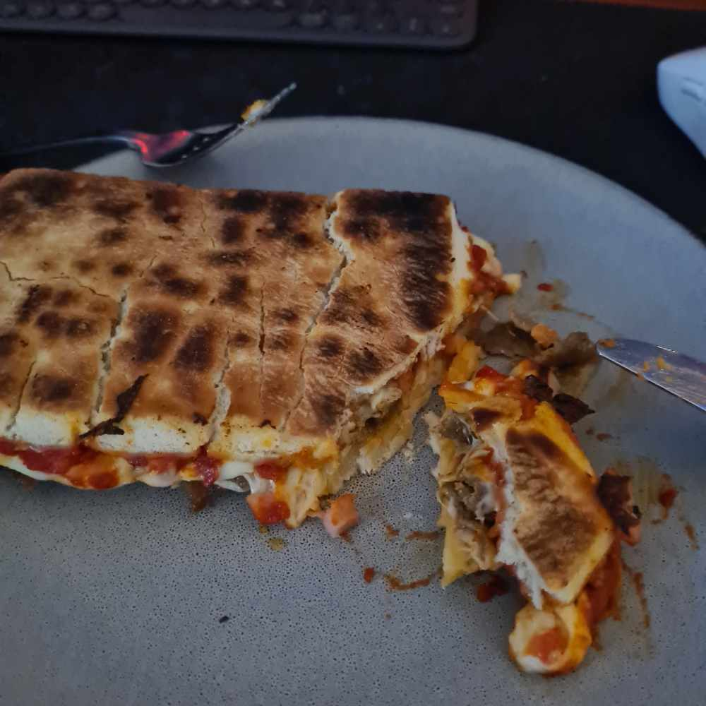

Gourmetbillys

Ingredients
- 2 billys pan pizzas
- Some kebab perhaps or some other topping.
Directions
- Start by preparing the 2 billys in the microwave for a minute or so.
- Stack the billys in a pan facing eachother, before hand you should add your
topping of choice inbetween the billys.
- Fry in a pan until it gets a nice and crispy surface.
- Enjoy your Gourmetbillys!
Go back to cooking page
Go back to homepage